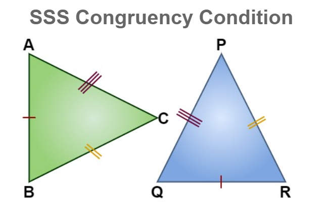
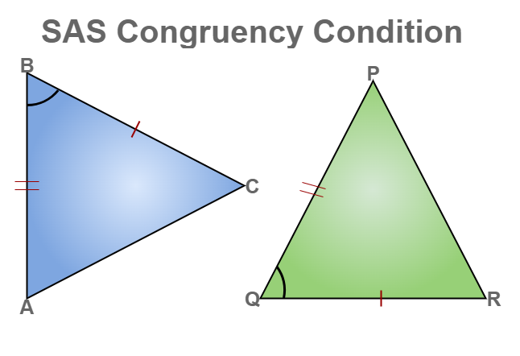
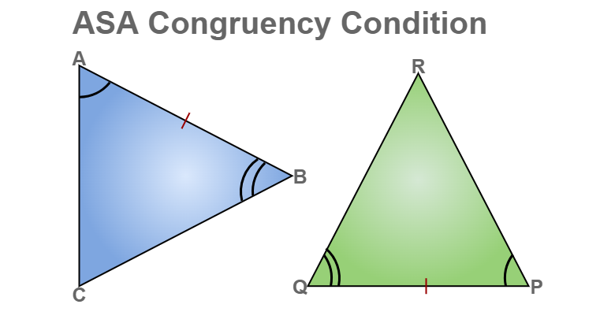
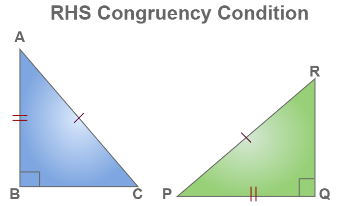

Side-Side-Side (SSS) Congruent Triangles
When two triangles have all three sides equal, they are called SSS (Side-Side-Side) Congruent Triangles.
This means if the three sides of one triangle are the same length as the three sides of another triangle, the triangles are congruent.
Congruent triangles have the same shape and size.
When triangles are congruent, their matching angles are also equal.
For example, if △ABC and △DEF have AB = DE, BC = EF, and AC = DF,
then the triangles are congruent (△ABC ≅ △DEF), and their angles are equal:
∠A = ∠D, ∠B = ∠E, and ∠C = ∠F.
Scan the QR code to directly view the 3D models in your AR camera and explore these mathematical shapes in your own space!

Side-Angle-Side (SAS) Congruent Triangles
When two triangles have two sides equal and the included angle (the angle between the two sides) also equal,
they are called SAS (Side-Angle-Side) Congruent Triangles.
This means if the two sides and the angle between them in one triangle are the same as the two sides and the included angle in another triangle,
the triangles are congruent.
For example, if △ABC and △DEF have AB = DE, ∠B = ∠E, and BC = EF, then the triangles are congruent (△ABC ≅ △DEF).
Congruent triangles have the same size and shape, so their matching angles and sides are also equal.
Scan the QR code to directly view the 3D models in your AR camera and explore these mathematical shapes in your own space!

Angle-Side-Angle (ASA) Congruent Triangles
When two triangles have two angles equal and the side between them also equal, they are called ASA (Angle-Side-Angle) Congruent Triangles.
This means if the two angles and the side between them in one triangle are the same as the two angles and the included side in another triangle,
the triangles are congruent.
For example, if △ABC and △DEF have ∠A = ∠D, AB = DE, and ∠B = ∠E, then the triangles are congruent (△ABC ≅ △DEF).
Congruent triangles have the same size and shape, so their matching sides and angles are also equal.
Scan the QR code to directly view the 3D models in your AR camera and explore these mathematical shapes in your own space!

Right angle - Hypotenuse - Side (RHS) Congruent Triangles
When two right-angled triangles have their hypotenuse and one side equal, they are called RHS (Right angle - Hypotenuse - Side) Congruent Triangles.
This means if both triangles have a right angle (∠90°), their hypotenuse (the longest side) is equal, and one other side is also equal, then the triangles are congruent.
For example, if △ABC and △DEF are right-angled triangles with ∠B = ∠E = 90°, AC = DF (hypotenuse), and AB = DE (one side), then the triangles are congruent (△ABC ≅ △DEF).
Congruent triangles have the same size and shape, so all their sides and angles are also equal.
Scan the QR code to directly view the 3D models in your AR camera and explore these mathematical shapes in your own space!
